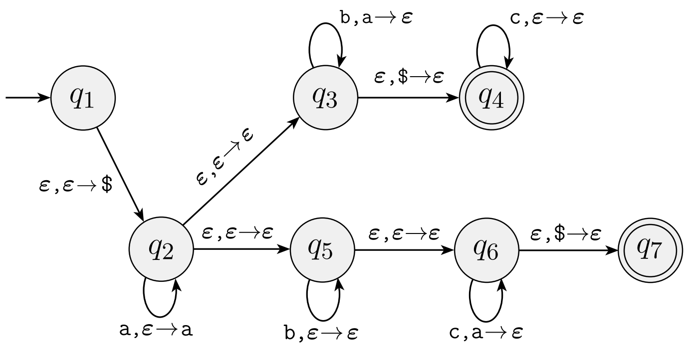

Homework 6
Last updated: Mon, 24 Oct 2022 10:08:57 -0400
Out: Mon Oct 24, 00:00 EST Due: Sun Oct 30, 23:59 EST
This assignment continues to explore context-free languages.
Homework Problems
Formal Description For PDAs (15 points)
A Regular Language is a Context-Free (15 points)
Non-CFL Whitespace Checking (9 points)
README (1 point)
Total: 40 points
Submitting
Submit your solution to this assignment in Gradescope hw6. Please assign each page to the correct problem and make sure your solutions are legible.
A submission must also include a README containing the required information.
1 Formal Description For PDAs
For the following PDA state diagram: 
Give a formal description of this PDA. Make sure to include all the necessary components.
Give two strings that are in the language recognized by this PDA. For each of these strings, give a sequence of configurations that represents an accepting computation for the PDA. One should end in state q_4 and the other in state q_7.
Give two strings that are not in the language recognized by this PDA.
Give a CFG for the language recognized by this PDA.
2 A Regular Language is a Context-Free
Every regular language is a context-free language!
Give three proofs of this statement, using each of the three representations of regular languages that we have studied: DFAs, NFAs, and regular expressions.
3 Non-CFL Whitespace Checking
The Design a CFG, Including Whitespace? problem from Homework 5 showed a CFL can enforce some whitespace requirements (for a programming language like Python). This problem will show that not all whitespace requirements can be expressed as a CFL.
Specifically, prove that the following language W, which contains a subset of Python if statements, is not a CFL. Use a proof by contradiction using the Pumping Lemma for CFLs.
Specifically, W is a language over alphabet \Sigma = \left\{\texttt{a},\ldots,\texttt{z},0,1\ldots,9,\texttt{\_},\texttt{:}\right\} (the \texttt{\_} char represents a space) that contains strings of the following form:
W = \left\{w\mid w=\texttt{if}\texttt{\_}b_1\texttt{:} indent_1 n_1\texttt{elif\_}b_2\texttt{:}indent_2 n_2\texttt{else:}indent_3 n_3\right\}
b_1,b_2\in\left\{\texttt{true},\texttt{false}\right\}
n_1,n_2,n_3\in\left\{0,1,\ldots,9\right\}
indent_1,indent_2,indent_3\in\texttt{\_\_}^*
|indent_1|=|indent_2|=|indent_3|